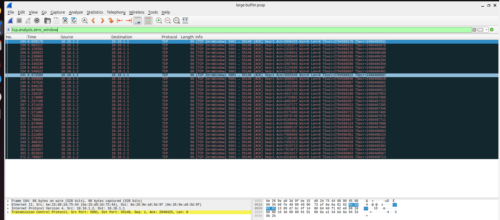

TCP
A reliable, ordered byte-stream protocol. It numbers data, retransmits losses, and adapts its sending speed.
How does the size of a receiver's buffer relate to the throughput TCP can reach? This site explains the theory, simulates the idea, and presents the measurements from this experiment.
Compare TCP throughput between PC1 (sender) and PC2 (receiver) when the receiver uses a small buffer and a large buffer, and inspect the advertised window and zero-window events in Wireshark.
TCP flow control lets a receiver slow a sender down. If the receiver's buffer is small, the advertised window can shrink to zero and stall the transfer. How much does this limit throughput?
A reliable, ordered byte-stream protocol. It numbers data, retransmits losses, and adapts its sending speed.
Stops a fast sender from overwhelming a slow receiver. The receiver tells the sender how much more data it can accept.
Memory on PC2 where arriving data waits until the application reads it. A bigger buffer can hold more unread data.
The free buffer space PC2 reports in every ACK. The sender may have at most this much unacknowledged data in flight.
PC2 advertises a window of 0 because its buffer is full. The sender must pause and wait for a window update. Wireshark flags these as TCP ZeroWindow.
PC2 confirms received data with ACKs, and each ACK carries the current window. Delayed ACKs or window updates let the sender resume.
Conceptual simulation. Not a live packet capture, and not connected to any real network.
Packets flow from PC1 to PC2 and fill the receiver buffer.
The application on PC2 drains the buffer at a fixed simulated rate. Event counts here are illustrative and are not my measured data.
Values below are measured results from my experiment.
| Measurement | Small buffer | Large buffer |
|---|---|---|
| Throughput | 0.89 Mbps | 17.27 Mbps |
| Zero-window events | 37 | 32 |
Data: my measured experiment results.
Transmission Control Protocol, read Window size value and Calculated window size.tcp.analysis.zero_window.tcp.analysis.window_update shows when PC2 reopens its window.tcp.flags.ack == 1 and follow Ack numbers.

Ubuntu
3.12.3
3.16
4.2.2
In this experiment, the large-buffer run reached a higher measured throughput (17.27 Mbps) than the small-buffer run (0.89 Mbps). Receiver buffer size may influence performance because it limits the advertised window. However, throughput also depends on other factors such as round-trip time, congestion control, link capacity, CPU load, and how fast the application reads data. These results alone do not prove that buffer size is the only cause of the difference.